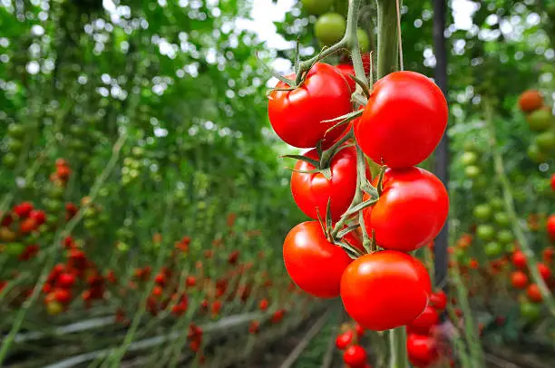

Featured Products

Mangoes
Sweet and juicy summer fruit.
Rice
Organic and locally sourced.

Tomato
Freshly harvested, farm grown.
We bring you nature’s best harvest directly from local farms. Every fruit, grain, and vegetable is carefully handpicked to ensure freshness, nutrition, and unbeatable taste. By connecting you with trusted farmers, we make sure you enjoy food that is not only healthy but also sustainably grown. Whether it’s juicy seasonal fruits, organic grains, or farm-fresh vegetables, our mission is to deliver quality produce from the soil to your plate with love and care. From breakfast to dinner, our produce adds natural goodness to every meal. With every bite, you’ll taste the purity of farm-fresh ingredients. Choose healthy, choose local — because your well-being starts with what’s on your plate.
Sweet and juicy summer fruit.
Organic and locally sourced.
Freshly harvested, farm grown.